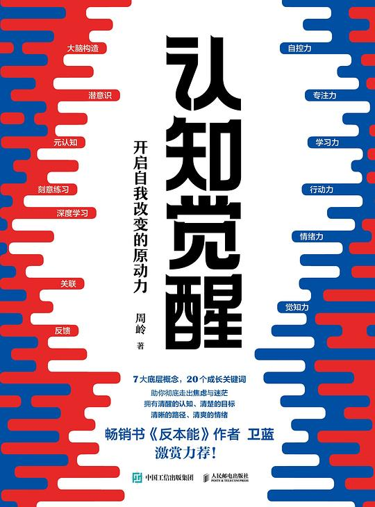
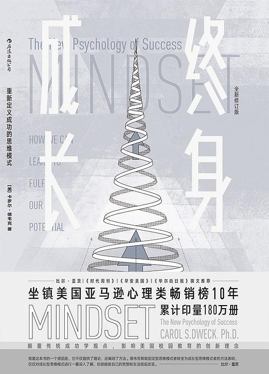
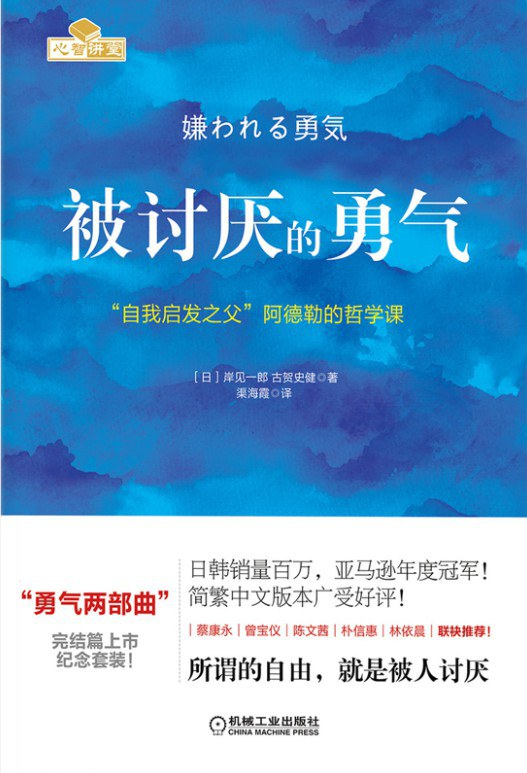

成长
优质视频推荐
好书推荐

《认知觉醒》
结合脑科学与心理学的个人成长方法论。解析本能脑、情绪脑与理智脑的构造，提供提升自控力与专注力的策略，引导读者从混沌走向清醒。

《终身成长》
斯坦福心理学教授经典之作。提出"成长型思维"与"固定型思维"，揭示决定成功的底层思维模式，教导人们通过努力拓展能力，积极面对挑战。

《被讨厌的勇气》
阐释阿德勒心理学的对话体通俗读物。提出"课题分离"等观点，指出烦恼源于人际关系，鼓励人们放下期待，拥有被讨厌的勇气以获得自由。